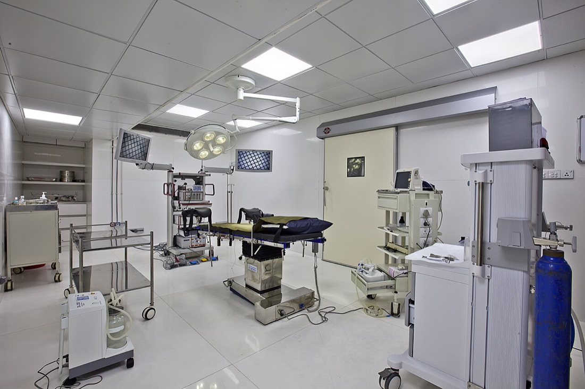

ברוכים הבאים לכירורגיה
מבוא לסבב ואדמיניסטרציה: איך בנוי המערך, איך נראה השבוע, איפה תהיו ואיך עובדים נכון ובטוח
בסוף המפגש תדעו
- איך בנוי המערך: שני אגפי אשפוז, חמש יחידות ומי עושה מה
- להתמצא בזמן: יום טיפוסי, השבוע הקבוע וששת השבועות של הסבב
- מה עושים בכל עמדה: מחלקה, מרפאות, חדר ניתוח, טרום ניתוח ומיון
- לעבוד בטוח: היגיינת ידיים, זיהוי מטופל, חדים ודיווח מסודר (SBAR)
- להשתמש באפליקציה בכיס: לו״ז, משוב יומי, פנקס ניתוחים וקשר עם הצוות
קפלן והסבב שלכם
בית חולים אוניברסיטאי המסונף לפקולטה לרפואה של האוניברסיטה העברית. עבודה קלינית לצד הוראה ומחקר
מי זה מי במערך
חמש יחידות המערך
- 1היחידה לכירורגיה הפטוביליארית
- 2היחידה לכירורגיה קולורקטלית
- 3היחידה לכירורגיה בריאטרית ולכירורגיה של מערכת העיכול העליונה
- 4מכון השד
- 5היחידה לכירורגיית דופן הבטן
איפה תהיו בסבב
המחלקהאגף א ואגף ב
ביקור בוקר אחרי הישיבה, בראשות רופא בכיר ויחד עם אחות המחלקה. קבלות ומעקב אחרי המטופלים באגף
מרפאותכל יום מרפאה אחרת
א׳ שד · ב׳ כללית, HPB, שד וחזה · ג׳ קולורקטלית · ד׳ כללית, שד וחזה · ה׳ קולורקטלית ושד
חדר הניתוחלפי השיבוץ
ניתוחים מתוכננים ודחופים בכל תחומי המערך, פתוחים ולפרוסקופיים
טרום ניתוחמרפאת טרום ניתוח
ג׳ 12:30–14:00 · כירורגית ב
ד׳ 13:00–14:30 · כירורגית א
מיוןמטופלים דחופים
כאן מתחיל המטופל הכירורגי הדחוף. ממנו מגיעות הקבלות למחלקה, לפי האגף שמקבל באותו יום
בכל עמדה
נכנסים, מציגים את עצמכם בשם ובתפקיד ושואלים במה אפשר לעזור. הנהלים המחייבים של בית החולים זמינים אצל האחות האחראית
הצעד הראשון אל השולחן

- בשבוע הראשון: מפגש הכרת חדר הניתוח. מגיעים אליו עם מדי חדר ניתוח
- נכנסים לחדר, מציגים את עצמכם לצוות ושואלים איפה לעמוד
- היגיינת ידיים לפני כל כניסה. לא נוגעים בשום דבר סטרילי בלי הנחיה
- שואלים לפני הניתוח מה הולך לקרות ולמה. אחרי הניתוח: מה מצפים לראות במחלקה
שלוש דרגות השתתפות
כל ניתוח ופרוצדורה נרשמים בפנקס שבאפליקציה, בלי פרטי מטופל
שבוע במבט אחד
אראשון
בשני
גשלישי
דרביעי
החמישי
יום טיפוסי, משני הצדדים
היום שלכם
ובמחלקה, מסביב לשעון
בסופי שבוע הביקור נעשה עם הכונן של אותו יום
מהיסודות ועד הבחינה
היסודות
- קבלת חולים והערכת סיכון
- בדיקת בטן
- הכרת חדר הניתוח
- סדנאות תפירה וורידים
- בקעים, gallbladder
החולה הדחוף
- שוק וספסיס
- בטן חריפה
- מבוא לטראומה
- צילומי חזה ובטן
- סרטן השד
מערכת העיכול
- סרטן ה-stomach
- דימום תחתון
- סעיפים, חסימת small bowel
- aorta
- אולטרסאונד בטן
pancreas ו-rectum
- פנקריאטיטיס
- השמנת יתר חולנית
- סרטן ה-rectum, פרוקטולוגיה
- סיבוכים כירורגיים
- CT בטן
liver, כלי דם ונוזלים
- portal hypertension
- צהבת חסימתית
- איסכמיה של המעי
- נוזלים ותזונה
- carotid
סיכום
- חבלת בטן קהה
- מסירת בשורה מרה
- דילמות מדיקו-לגליות
- בחינה מסכמת
- משובים ושיחת סיכום
שש דרכים ללמוד במערך
מה אנחנו מצפים, מה אתם מקבלים
מה אנחנו מצפים מכם
- נוכחות בזמן בכל מפגש שבלו״ז. הנוכחות נרשמת בכל יום
- השתתפות פעילה בביקור הבוקר
- היכרות עם המטופלים באגף שלכם
- אחריות על המשימות שקיבלתם, עד הסוף
- דיווח מיידי על כל שינוי במצב מטופל
- משוב יומי קצר ורישום בפנקס
מה אתם מקבלים מאיתנו
- ליווי צמוד של צוות המערך לאורך הסבב
- תוכנית הוראה מסודרת לשישה שבועות
- חומר לכל מפגש: מטרות, קריאה ומצגת
- חשיפה לחדר הניתוח, למרפאות ולמחלקה
- הקשבה: תשובה לכל הודעה ושינוי לפי המשוב שלכם
ליד המיטה ובכתיבה
- מציגים את עצמכם לפני המטופל
- זיהוי לפי שם מלא ומספר תעודת זהות
- בדיקה גופנית מלאה ועדכנית במחלקה: לב, ריאות ובטן
- שמים לב לנקזים, לזונדה ולקטטר: מה יוצא וכמה
- בדיקה רקטלית רק בנוכחות רופא
- עיקר הקבלה: המחלה הנוכחית, בסדר כרונולוגי ברור
- רק מה שרלוונטי. לא מעתיקים מידע שאינו תורם
- תרופות קבועות עם מינונים
- נוגדי קרישה: איזו תרופה ומתי נלקחה המנה האחרונה
- קוראים את מכתב המיון ואת האשפוזים הקודמים
תבנית הקבלה בעשר שורות
חמשת הרגעים
ירוק: מגינים על המטופל · אדום: מגינים עלינו ועל הסביבה · לפי ארגון הבריאות העולמי (WHO)
- לפני מגע במטופל
- לפני פעולה נקייה או אספטית
- אחרי חשיפה אפשרית לנוזלי גוף
- אחרי מגע במטופל
- אחרי מגע בסביבת המטופל: מיטה, מגש, מוניטור, גם בלי לגעת בו
- כפפות אינן תחליף: מחטאים לפני שלובשים ואחרי שמסירים
- בלי טבעות, שעון וציפורניים ארוכות בזמן טיפול
- חדר בבידוד: קוראים את השלט ולובשים מיגון מתאים
שני מזהים. כל פעם.
שם מלא ומספר תעודת זהות, מול הצמיד ומול הרשומה הממוחשבת. לפני בדיקה, לקיחת דם, טיפול והעברה
משאירים בטוח, מדווחים מסודר
- 🛏️ מניעת נפילות: דפנות סגורות לפי ההנחיה, מיטה נמוכה, בלמים נעולים, פעמון בהישג יד
- 🔁 בסוף כל פעולה מחזירים את הדפנות, הפעמון והסביבה למצב בטוח
- 📣 שינוי במצב המטופל: מדווחים מיד לרופא האחראי ולאחות
- ✋ אין שאלה מיותרת: כשלא בטוחים עוצרים ושואלים. זו לא חולשה, זו בטיחות
מדווחים ב-SBAR
מחט אחת, פעם אחת
נדקרתם או הותזתם?
- שוטפים מיד במים וסבון. ריריות ועיניים במים זורמים
- מדווחים מיד לאחראי המשמרת
- פונים מיד לטיפול לפי נוהל בית החולים לחשיפה לדם
״שלום, אני ___, סטודנט/ית לרפואה״
מול המטופל
- דופקים, נכנסים ומציגים את עצמכם בשם ובתפקיד. תג השם גלוי
- מסבירים מה עומדים לעשות ומבקשים הסכמה לפני כל בדיקה
- פרטיות: וילון סגור בבדיקה. לא מדברים על מטופלים במסדרון ובמעלית
- מידע רפואי ותוצאות נמסרים למטופל ולמשפחה רק על ידי רופא
עם הצוות הסיעודי
כל הסבב בטלפון אחד
עכשיו חדר ניתוח
הלו״ז של היום
איך היה היום?
קישור אישי לכל סטודנט/ית. פותחים בטלפון ומוסיפים למסך הבית
שאלה? יש כתובת
כללי הזהב של המערך
- כל מפגש וישיבה מתחילים בזמן
- זיהוי מטופל, תמיד: שם מלא ותעודת זהות
- עד שתי דקירות. אחר כך קוראים לעזרה
- תוכנית הטיפול נקבעת על ידי רופא
- בקבלה: המחלה הנוכחית קודם
- אין שאלה מיותרת
- פותחים את הקישור האישי לאפליקציה ומוסיפים למסך הבית
- מביאים מדי חדר ניתוח ליום של הכרת חדר הניתוח
- עוברים על החומר של כל מפגש לפני שמגיעים
- מכירים את המטופלים ואת האחיות באגף שלכם
- שולחים משוב יומי בסוף כל יום
המצגת "עבודה נכונה במערך" היא מסמך הכוונה של המערך ולא נוהל רשמי. הנהלים המחייבים של בית החולים זמינים אצל האחות האחראית